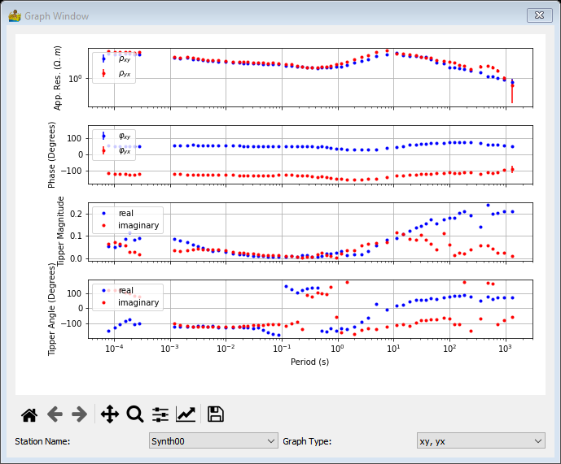

Magnetotellurics: Context Menu¶
These context menus are available for modules which have MT data. Output data is only available on green modules. To access the context menu, simply right-click a green module.
Display/Edit Metadata¶
This module allows for the display and custom editing of metadata associated with EDI data. Options are
Station Name: Shows the current name of a station to be displayed or edited.
Rename Station Name
Latitude
Longitude
Elevation
UTM X Coordinate
UTM Y Coordinate
UTM Zone
Rotation
Show Graphs¶
This provides graphs of the station data. The station name and the graph type (xy, yx or xx, yy) can be changed.
Export EDI¶
This exports the output EDI data.